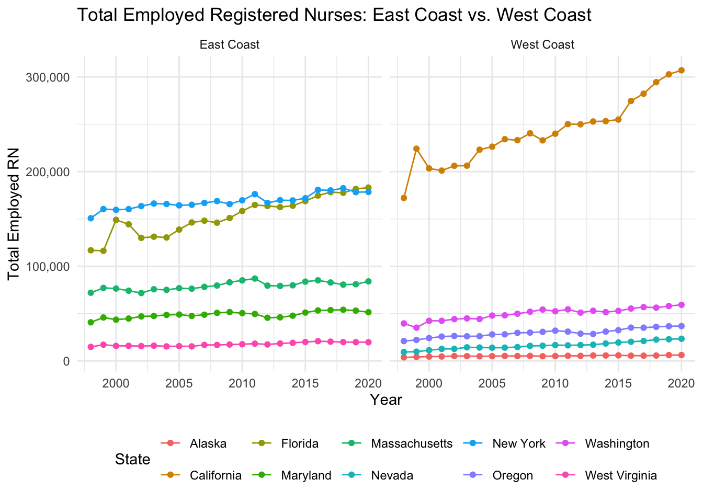
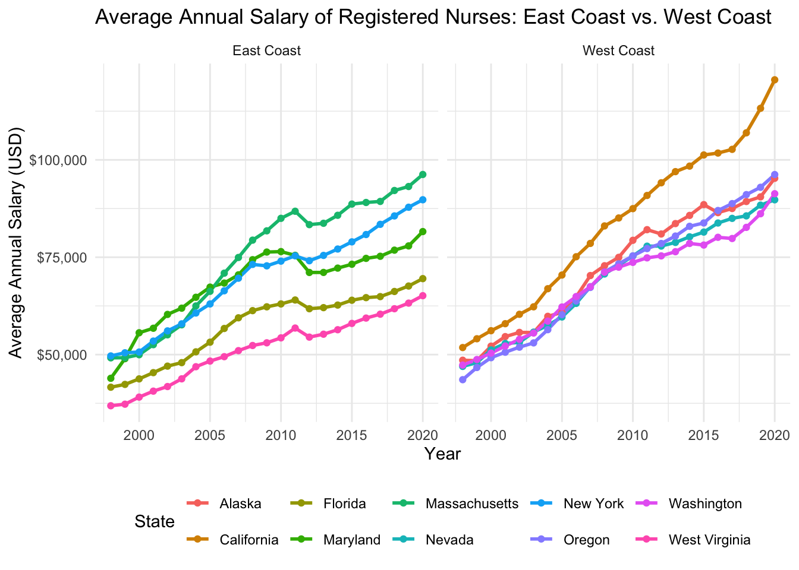

Project 1: Exploring trends in Reginstered Nurses employment in the US using TidyTuesday data.
Author
Lilian Hu
Published
February 12, 2025
Introduction
The dataset used in this analysis comes from TidyTuesday, originally sourced from Data World.] This data set provides information on the employment and wages of registered nurses (RNs) across U.S. states over multiple years, making it a valuable resource for analyzing trends in the nursing workforce.
For this analysis, I selected ten states from the East and West Coasts to compare RN employment and wages. The selection was based on a mix of states with varying geographical, economic, and healthcare profiles. High-employment and high-wage states such as California and New York were included alongside states with different economic and healthcare characteristics, such as West Virginia and Nevada. This allows for a more comprehensive understanding of how factors like urbanization, cost of living, and healthcare infrastructure impact RN workforce distribution and salary trends.
Load Packages and Data Sets
library(tidyverse)
── Attaching core tidyverse packages ──────────────────────── tidyverse 2.0.0 ──
✔ dplyr 1.1.4 ✔ readr 2.1.4
✔ forcats 1.0.0 ✔ stringr 1.5.1
✔ ggplot2 3.5.1 ✔ tibble 3.2.1
✔ lubridate 1.9.3 ✔ tidyr 1.3.0
✔ purrr 1.0.2
── Conflicts ────────────────────────────────────────── tidyverse_conflicts() ──
✖ dplyr::filter() masks stats::filter()
✖ dplyr::lag() masks stats::lag()
ℹ Use the conflicted package (<http://conflicted.r-lib.org/>) to force all conflicts to become errors
tuesdata <- tidytuesdayR::tt_load(2021, week =41)
---- Compiling #TidyTuesday Information for 2021-10-05 ----
--- There is 1 file available ---
── Downloading files ───────────────────────────────────────────────────────────
1 of 1: "nurses.csv"
nurses <- tuesdata$nurses
Analysis
library(scales)
Warning: package 'scales' was built under R version 4.3.3
Attaching package: 'scales'
The following object is masked from 'package:purrr':
discard
The following object is masked from 'package:readr':
col_factor
nurses |>filter(State %in%c("New York", "Massachusetts", "Florida", "West Virginia", "Maryland","California", "Washington", "Alaska", "Nevada", "Oregon")) |>mutate(Region =ifelse(State %in%c("California", "Washington", "Alaska", "Nevada", "Oregon"), "West Coast", "East Coast")) |>select(State, Year, `Total Employed RN`, Region) |>drop_na() |>ggplot(aes(x = Year, y =`Total Employed RN`, color = State)) +geom_line() +geom_point() +scale_y_continuous(labels =comma_format()) +theme_minimal() +labs(title ="Total Employed Registered Nurses: East Coast vs. West Coast",x ="Year", y ="Total Employed RN", color ="State") +theme(legend.position ="bottom") +facet_wrap(~ Region)

nurses |>filter(State %in%c("New York", "Massachusetts", "Florida", "West Virginia", "Maryland","California", "Washington", "Alaska", "Nevada", "Oregon")) |>mutate(Region =ifelse(State %in%c("California", "Washington", "Alaska", "Nevada", "Oregon"), "West Coast", "East Coast")) |>select(State, Year, `Annual Salary Avg`, Region) |>drop_na() |>ggplot(aes(x = Year, y =`Annual Salary Avg`, color = State)) +geom_line(size =1) +geom_point() +scale_y_continuous(labels =dollar_format()) +theme_minimal() +labs(title ="Average Annual Salary of Registered Nurses: East Coast vs. West Coast",x ="Year", y ="Average Annual Salary (USD)", color ="State") +theme(legend.position ="bottom") +facet_wrap(~ Region)
Warning: Using `size` aesthetic for lines was deprecated in ggplot2 3.4.0.
ℹ Please use `linewidth` instead.

Results
The first plot visualizes the total employment of registered nurses over time across the selected states. The results show a clear disparity between states, with California having the largest number of employed RNs, followed by New York and Florida. In contrast, states such as West Virginia and Nevada consistently exhibit much lower RN employment levels, reflecting their smaller populations and healthcare demands. Notably, California shows steady employment growth, particularly from 2010 onward, while other states exhibit a more gradual increase or stagnation.
The second plot examines the average annual salary of RNs over time. Salaries have increased across all states, but at different rates. California stands out with the highest RN salaries, exceeding $125,000 in recent years, while states like West Virginia and Idaho have significantly lower salary growth, remaining below $80,000. The gap between high-paying and low-paying states has widened over time, with West Coast states generally showing stronger salary increases compared to some East Coast states.
Discussion
The results highlight key differences in RN employment and salaries based on economic and regional factors. California’s high employment and rising wages align with its position as the most populous state, where demand for healthcare professionals is consistently strong. Additionally, California has strict nurse-to-patient ratio laws, requiring hospitals to employ more nurses, which likely contributes to both higher employment numbers and competitive salaries.
New York and Florida, while also showing high employment levels, exhibit different trends. Florida has a large aging population, which increases healthcare demand, yet its wage growth is slower compared to California. New York, with its major metropolitan healthcare hubs, maintains strong employment and salary growth, though not as pronounced as California.
Conversely, West Virginia and Idaho consistently report lower RN employment and salaries, reflecting their smaller healthcare infrastructures and rural populations. West Virginia, in particular, has faced challenges with retaining healthcare workers, as many nurses seek higher-paying opportunities in neighbouring states. Similarly, Idaho’s lower wages suggest fewer resources allocated to healthcare personnel, which may impact nurse retention and recruitment.
A notable trend is the wage gap between coasts. West Coast states, especially California and Washington, have seen stronger salary growth compared to many East Coast states. This could be attributed to differences in cost of living, labor laws, and healthcare funding. Additionally, states like Hawaii and Nevada show unique trends, where wages have risen significantly despite having a smaller RN workforce, possibly due to workforce shortages requiring higher pay to attract nurses.
Overall, this analysis underscores the regional disparities in RN employment and wages, emphasizing the role of economic conditions, healthcare policies, and geographic challenges in shaping the nursing workforce. These findings are crucial for policymakers and healthcare administrators seeking to address workforce shortages, improve salary competitiveness, and ensure adequate healthcare staffing across different regions.